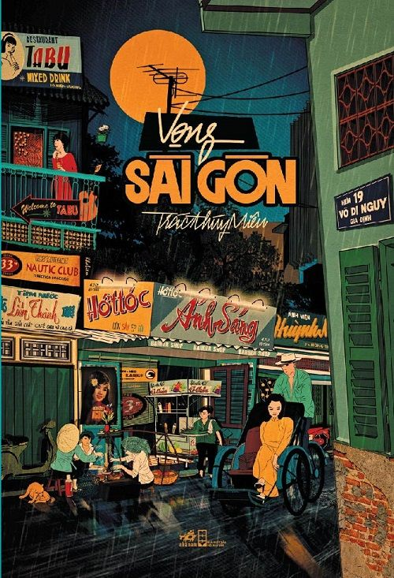
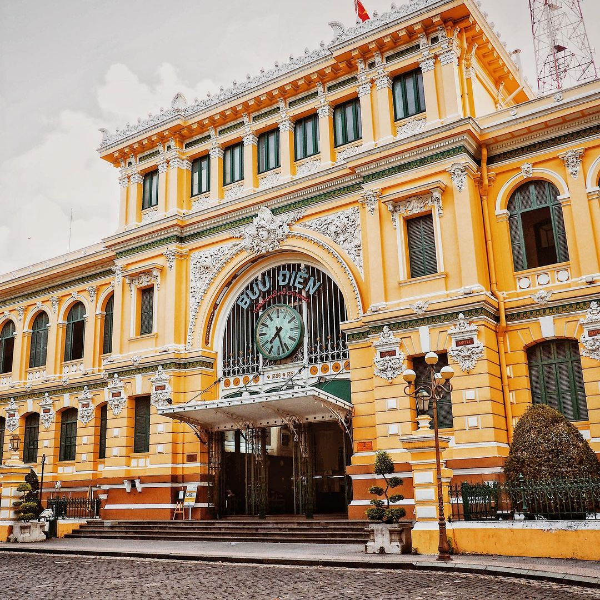

Welcome to my Home Page
Sai Gon in the 70's
the 1970s, Saigon exuded a unique charm amidst the turmoil of the Vietnam War. Its streets were alive with a blend of Vietnamese tradition and international flair, where bustling markets offered a kaleidoscope of colors and flavors. Despite the challenges of the era, the city's residents displayed remarkable resilience, finding solace in everyday rituals and the warmth of communal bonds. Amidst the French colonial architecture and modern influences, Saigon remained a vibrant melting pot of cultures, where laughter and camaraderie thrived despite the uncertainty that hung in the air.
Beneath the surface of its bustling streets, Saigon harbored stories of resilience and determination. Despite the political tensions and occasional bursts of conflict, life in the city pulsated with a sense of resilience and optimism. From the aromatic street food stalls to the lively music venues, Saigon's spirit shone through, a testament to the indomitable human spirit. The 1970s marked a chapter of both struggle and triumph for Saigon, embodying the resilience of its people and the enduring allure of a city that continued to thrive amidst adversity.
European Influence
During the 1970s, Saigon bore the indelible marks of European influence, stemming from its colonial past and vibrant expatriate community. French architectural marvels adorned the cityscape, echoing Parisian elegance in grand boulevards and colonial villas. European expatriates infused Saigon with a cosmopolitan flair, introducing diverse cultural practices, culinary delights, and artistic expressions. European educational institutions fostered intellectual growth, while businesses from across the continent engaged in trade and commerce, shaping the city's economic landscape. Infrastructural advancements, guided by European engineering expertise, transformed Saigon's urban fabric, underscoring the enduring imprint of European ingenuity on the city's development during this transformative decade.